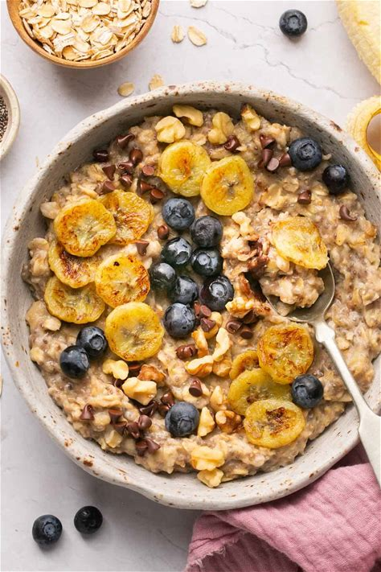

Blueberry Banana Oatmeal

Description
Start your day off right with this healthy and delicious bowl of blueberry banana oatmeal. It's packed with fiber, protein, and antioxidants!
Ingredients
- 1 cup (80g) rolled oats
- 2 cups (480 ml) water
- 1/4 teaspoon salt
- 1 banana, sliced
- 1/2 cup (75g) fresh blueberries
- 1 tablespoon (15 ml) honey
- 1/4 cup (60 ml) milk
Steps
- In a medium saucepan, bring the water and salt to a boil. Stir in the oats and reduce heat to low. Cook for about 5 minutes, stirring occasionally, until the oats are tender and the mixture has thickened.
- Stir in the sliced banana and blueberries, reserving a few for topping. Cook for another 2-3 minutes until the fruit is warmed through and the blueberries have started to burst.
- Remove from heat and stir in the honey and milk. Add more milk as desired for a creamier consistency.
- Divide the oatmeal into bowls and top with the reserved fruit. Serve immediately and enjoy!